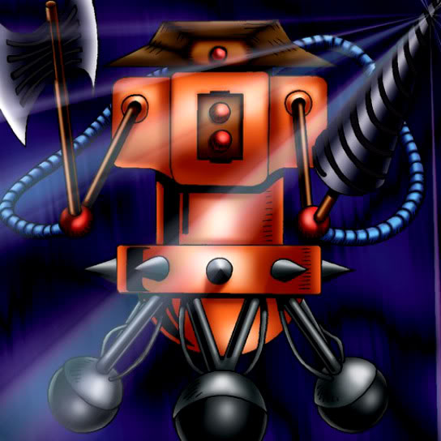

Patrol Robo

Description: "When this card is flipped face-up, flips all opponent SPELL cards face-up."
STATS
ATK: 1100
DEF: 900DECK COST
Deck Cost per Card: 25EFFECT NOT IMPLEMENTED
Fusion List (5 Possible Fusions)
- Patrol Robo + Baby Dragon = Metal Dragon
- Patrol Robo + Eyearmor = Cyber Soldier
- Patrol Robo + Lesser Dragon = Metal Dragon
- Patrol Robo + Tomozaurus = Cyber Saurus
- Patrol Robo + Torike = Dice Armadillo